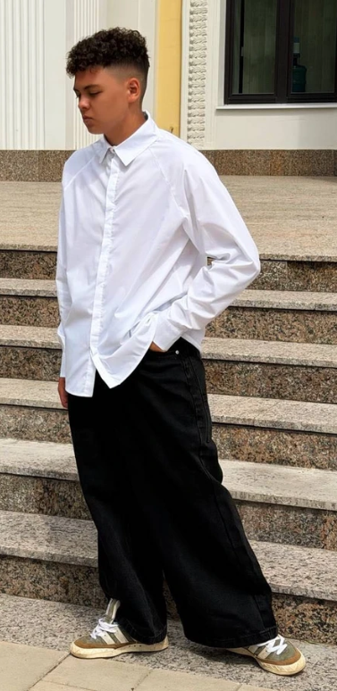

Кейс из портфолио
Карточка школьной рубашки: было → стало
Разбор на примере товара «Рубашка школьная для мальчика, Setfilstyle» — как выглядит слабая карточка и что меняется, когда над ней поработать перед сезоном сбора в школу.
Категория: детская одежда, школьная форма
Площадка: Ozon / Wildberries
Сезон спроса: август–сентябрь
Сейчас😐
Название
Рубашка школьная для мальчика
Описание
«Хорошая рубашка для школы. Подходит для повседневной носки. Комфортная ткань. Есть застёжка на кнопках.»
Характеристики
длинный рукав
полуприлегающий
кнопки
📷 1 фото — общий вид на вешалке, без инфографики
Могло бы быть✓

80% хлопок
кнопки
Название
Школьная рубашка для мальчика, белая, полуприлегающий крой, кнопки, 80% хлопок, р. 140
Описание
Полуприлегающий силуэт не сковывает движения, но выглядит аккуратно на линейке и каждый день.
Застёжка на кнопках — ребёнок переоденется сам, без помощи взрослых. Удобно перед физкультурой.
80% хлопка и 20% эластана — мягкая ткань, меньше мнётся, дольше держит форму после стирки.
Характеристики
цвет: белый (+5 вариантов)
состав: хлопок 80% / эластан 20%
воротник: отложной
сезон: всесезонная
уход: 30–40°C
📷 5 фото-слайдов: ребёнок в рубашке · крупный план ткани · бирка состава · размерная сетка · инструкция по уходу
Что именно изменилось
-
1
Название стало «поисковым»
Добавлены цвет, крой, застёжка, состав и размер — по этим словам родители ищут рубашку на Ozon и Wildberries.
-
2
Описание отвечает на реальные вопросы родителя
Вместо общих слов «удобная, комфортная» — конкретика: сам переоденется перед физкультурой, меньше мнётся, как стирать.
-
3
Характеристики разложены по полям
Цвет, состав, воротник, сезон и уход вынесены отдельно — карточка читается за секунды, а не абзацем текста.
-
4
Одно фото превратилось в пять смысловых слайдов
Каждое фото закрывает один вопрос покупателя: как сидит, из чего сшита, какой размер брать, как стирать.
-
✓
Что уже было сильной стороной
Кнопки вместо пуговиц — правильный выбор для этого товара: продавец уже угадал с деталью, которая реально важна родителям младших школьников. Это стоило просто громче показать в тексте и на фото.
Ключевые слова, добавленные в семантику
школьная рубашка
рубашка для мальчика
рубашка белая
рубашка с кнопками
рубашка хлопок эластан
рубашка для школы мальчику